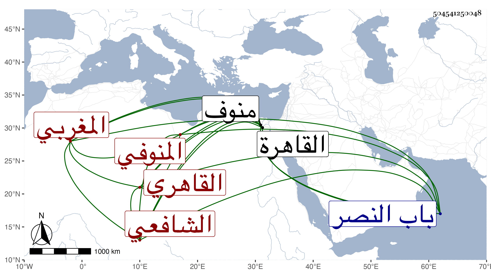

0902Sakhawi.DawLamic.ITO20230111-ara1.EIS1600.504541250048
Biography ID: 504541250048
656
عبد الغني بن علي بن عبد الحميد بن عثمان بن عبد القادر بن ظهيرة بالمعجمة والتكبير التقي أبو محمد المغربي الأصل المنوفي ثم القاهري الشافعي ويقال له البهائي لسكناه حارة بهاء الدين . ولد تقريبا سنة سبعين أو بعدها بقليل بمنوف وحفظ بها القرآن والتنبيه ثم تحول مع أمه إلى القاهرة للاشتغال بالعلم فحفظ المنهاج الأصلي وألفية الحديث والنحو والعمدة وعرض على شيوخ العصر وأخذ الفقه عن البلقيني وابن الملقن والابناسي وكان جل انتفاعه به بحيث أذن له في التدريس والاصول عن نور الدين بن قبيلة البكري والشمس القيلوبي والنحو عن البرهان الدجوي والمحب بن هشام وغيرهما ولازم العز بن جماعة في العقليات وغيرها وكذا أخذ فيها عن قنبر بل أخذ بعد عن شيخنا العز عبد السلام البغدادي ولزم الولي العراقي وشيخنا واختص به وعرف بالانتساب له قديما وسمع عليه الكثير من تصانيفه وغيرها ولازم مجالس املائه وغيرها وكتب بخطه أكثر فتح الباري وغيره من تصانيفه ووصفه بالشيخ الإمام الفاضل الأوحد مفيد الطالبين حفظه الله ، وحج في سنة إحدى وثمانمائة وسمع الحديث على التاج بن الصيح والزين العراقي والهيثمي والتقي الدجوي وناصر الدين نصر الله الحنبلي والبرشنسي والشرف بن الكويك في آخرين من طبقتهم وبعدها كالنور الابياري والشمس البرماوي والجمال الكازروني والشهاب البطائحي والسراج قاري الهداية ، وتكسب بالشهادة وقتا وبرع في معرفة الشروط ونحوها ولكنه لم يكن طلق اللسان بل كان جامدا مع فضيلة ومشاركة في الجملة وقد تصدر بجامع الحاكم وبالأشرفية القديمة وغيرهما وانتفع به ابن أخيه لأمه الفاضل نور الدين وغيره في الشروط وغيرها ، وناب في القضاء دهرا عن شيخنا وقصر نفسه عليه فلم ينب عن غيره من القضاة ، وأوذي من العلم البلقيني لانتقاده عليه في فتيا ثم ألبسه جندة بيضاء ولامه شيخنا على لبسها ، وقد حدث باليسير قرأت عليه ، وتعلل مدة وأقعد حتى مات في ليلة الجمعة تاسع عشري ربيع الأول سنة ثمان وخمسين وصلى عليه من الغد ودفن خارج باب النصر بتربة مجاورة للست زينب رحمه الله وإيانا .
